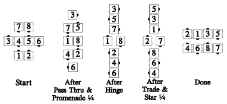
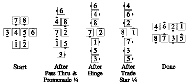

From any quarter tag or quarter line formation in which each very center can Pass Thru with an outside dancer. [At Advanced, this call is restricted to starting from right-or left-hand quarter tag formations only.] The very centers Pass Thru with the dancers they are facing, while the ends of the center line/wave Promenade 1/4 around the outside of the set. The original very centers and the dancers they are next to, Hinge. The centers Star (or Diamond Circulate) one spot, while the outsides Trade. Those who meet now Cast Off ¾, while the others move up (as in Hourglass Circulate) to become the ends of parallel waves.
Example:

Or:

Timing: 12